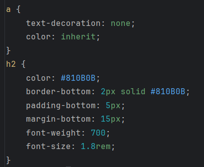
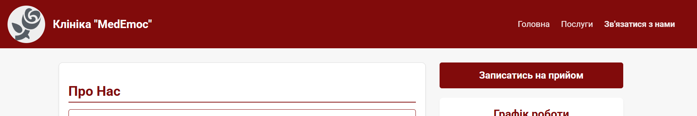
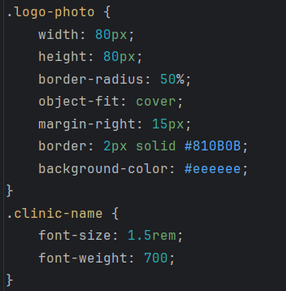
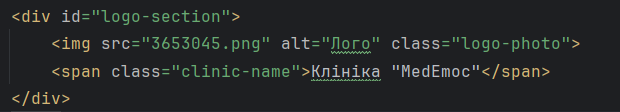
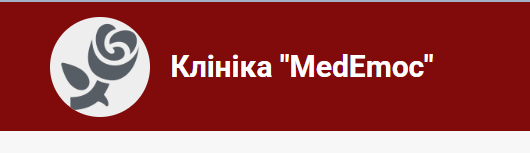
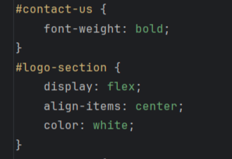
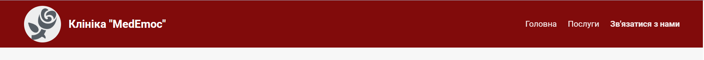
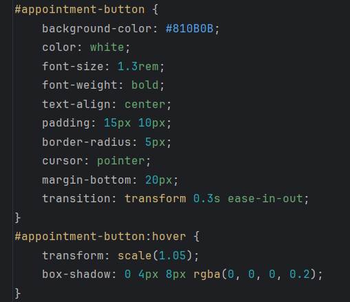

Тема: КАСКАДНІ ТАБЛИЦІ СТИЛІВ. СЕЛЕКТОРИ .ІДЕНТИФІКАТОРИ. СТИЛЬОВЕ ОФОРМЛЕННЯ ТЕКСТОВИХ ЕЛЕМЕНТІВ В HTML-ДОКУМЕНТАХ.
Мета: придбати практичні навички роботи з селекторами, ідентифікаторами, списками, різноманітними властивостями кольору і фону, зовнішними та внутрішними відступами, плаваючими елементами, оформленням текстових елементів
Посилання на місце розташування сайтуСпособи підключення стилів
Існує три основні способи підключення Каскадних Таблиць Стилів (CSS) до HTML-документа. Вибір способу залежить від того, наскільки великим є проєкт і наскільки потрібно відокремити структуру від оформлення.
- Зовнішні Стилі:
- Це найбільш поширений і рекомендований спосіб. Стилі зберігаються в окремому файлі з розширенням .css (наприклад, styles.css), а потім підключаєте його до HTML-документа за допомогою тегу <link>.
- Внутрішні Стилі:
- Стилі розміщуються безпосередньо в HTML-документі, у секції <head>, за допомогою тегу <style>.
- Внутрішні Стилі:
- Стилі застосовуються безпосередньо до конкретного HTML-елемента за допомогою атрибута style.
Селектори тегу:
Селектор тегу вибирає усі елементи на сторінці з певним ім'ям тегу (наприклад, p, h1, div, a).

Продемонстровані стилі застосовуються до посилань та заголовків h2. Ось приклад вигляду на самій сторінці

Селектори класу:
Селектор класу вибирає усі елементи, які мають певний атрибут class. Клас можна використовувати багаторазово на різних елементах.

Як клас призначається для елемента:

Результат:

Селектори ідентифікатора:
Селектор ідентифікатора вибирає лише один унікальний елемент на сторінці, який має певний атрибут id.
Ідентифікатор має бути унікальним для кожного елемента в межах сторінки.

Результат:

Важливо розуміти, що ці селектори мають різний пріоритет (специфічність), якщо стилі конфліктують:
Селектор Ідентифікатора (вищий)
Селектор Класу
Селектор Тегу (нижчий)
Тобто, стиль, визначений за допомогою ID, завжди переважатиме стиль, визначений за допомогою класу чи тегу.CSS:
У ході даної роботи були використані знання з різних тем CSS. Наприклад:
- Шрифти (Fonts): Властивості для контролю гарнітури, розміру, жирності та стилю шрифту (наприклад, font-family, font-size, font-weight).
- Текст (Text): Властивості для форматування тексту, включаючи вирівнювання, інтервал, колір та декорації (наприклад, text-align, line-height, color, text-decoration).
- Фон (Background): Властивості для встановлення кольору або зображення фону елемента (наприклад, background-color, background-image, background-repeat).
- Контур (Outline/Border): Властивості, що використовуються для встановлення меж навколо елементів (наприклад, border, outline). Вони визначають стиль, товщину та колір лінії.
- Списки (Lists): Властивості для стилізації маркерів або нумерації списків (наприклад, list-style-type, list-style-image).
Також був застосований просунутий CSS для створення невеличкої анімації кнопки.
Висновки:
У ході даної практичної роботи були засвоєні ключові аспекти роботи з каскадними таблцями стилів. Також була приділена особлива увага селекторам та ідентифікаторам для створення особливого дизайну. Завдяки широким можливостям СSS було розроблено дизайн на основі попередньо створеного макету, що стане основою сайту для обраної теми.